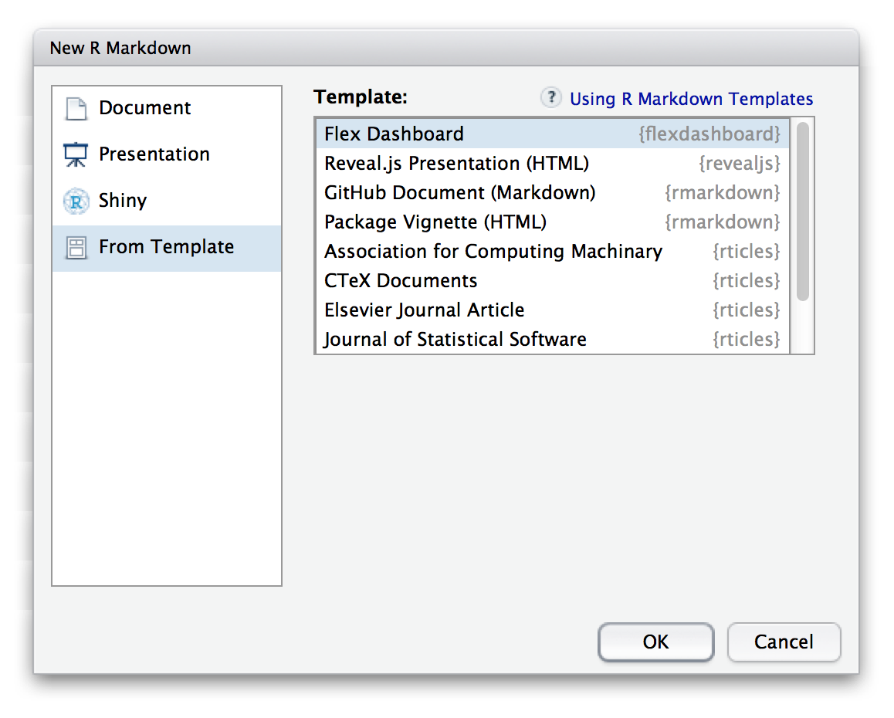

Use R Markdown to publish a group of related data visualizations as a dashboard.
Support for a wide variety of components including htmlwidgets; base, lattice, and grid graphics; tabular data; gauges and value boxes; and text annotations.
Flexible and easy to specify row and column-based layouts. Components are intelligently re-sized to fill the browser and adapted for display on mobile devices.
Storyboard layouts for presenting sequences of visualizations and related commentary.
Optionally use Shiny to drive visualizations dynamically.

Getting Started
Install the flexdashboard package from CRAN as follows:
install.packages("flexdashboard")
To author a flexdashboard you create an R Markdown document with the flexdashboard::flex_dashboard output format. You can do this from within RStudio using the New R Markdown dialog:

If you are not using RStudio, you can create a new flexdashboard R Markdown file from the R console:
rmarkdown::draft("dashboard.Rmd", template = "flex_dashboard", package = "flexdashboard")
Dashboard Basics
Components
You can use flexdashboard to publish groups of related data visualizations as a dashboard. A flexdashboard can either be static (a standard web page) or dynamic (a Shiny interactive document). A wide variety of components can be included in flexdashboard layouts, including:
Interactive JavaScript data visualizations based on htmlwidgets.
R graphical output including base, lattice, and grid graphics.
Tabular data (with optional sorting, filtering, and paging).
Value boxes for highlighting important summary data.
Gauges for displaying values on a meter within a specified range.
Text annotations of various kinds.
See the dashboard components documentation for additional details on the use of each component type.
Layout
Single Column (Fill)
Dashboards are divided into columns and rows, with output components delineated using level 3 markdown headers (###). By default, dashboards are laid out within a single column, with charts stacked vertically within a column and sized to fill available browser height. For example, this layout defines a single column with two charts that fills available browser space:
Single Column (Scroll)
Depending on the nature of your dashboard (number of components, ideal height of components, etc.) you may prefer a scrolling layout where components occupy their natural height and the browser scrolls when additional vertical space is needed. You can specify this behavior via the vertical_layout: scroll option. For example, here is the definition of a single column scrolling layout with three charts:
Multiple Columns
To lay out charts using multiple columns you introduce a level 2 markdown header (--------------) for each column. For example, this dashboard displays 3 charts split across two columns:
In this example we’ve moved Chart 1 into its own column which it will fill entirely. We’ve also given the column a larger size via the data-width attribute to provide additional emphasis to Chart 1.
Learning More
The Using page includes documentation on all of the features and options of flexdashboard, including layout orientations (row vs. column based), chart sizing, the various supported components, theming, and creating dashboards with multiple pages.
The Shiny page describes how to create dashboards that enable viewers to change underlying parameters and see the results immediately, or that update themselves incrementally as their underlying data changes.
The Layouts page includes a variety of sample layouts which you can use as a starting point for your own dashboards.
The Examples page includes several examples of flexdashboard in action (including links to source code if you want to dig into how each example was created).